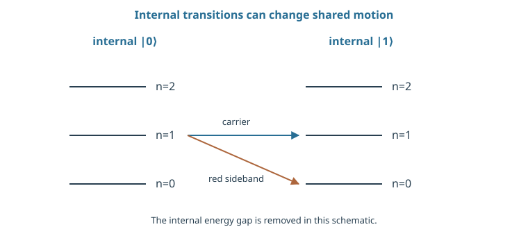
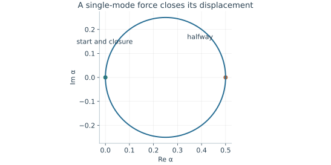

Starting point: Chapters 1–8; physical concepts and approximations are introduced as needed.
Anchor example: Two ion spins coupled through a shared motional mode.
This lesson includes explanations, worked examples, and problems with solutions. Advanced results whose proofs are outside the chapter are identified explicitly.
A superconducting qubit is made; an atomic qubit is found. Every ion of a given species has the same levels, so the qubits need no fabrication and do not vary from one to the next. What we lose are the wires that let circuits touch. Ions held apart by electric fields still push on one another through their charge, so a string of ions shares collective vibrations. Can that shared motion serve as the mediator we analysed with ladder operators and coherent states?
We first ask how an ion is held and which of its states store the qubit. The motion turns out to be an oscillator separate from the internal levels, so each must be prepared in its own way. Asking how light can change the motion as well as the internal state gives carrier and sideband transitions. A state-dependent force on a shared mode then gives the mediated entangling gate, with the closing loop we derived earlier. Finally we ask how an ion's state is detected, and what limits a long chain or a network of traps.
Our first question is how an ion is held, and which of its states we use.
9.1 Atomic Qubits
An ion has an internal electronic state and a position. Which provides the qubit, which provides the coupling, and how is each prepared? Expanding the trap potential gives an oscillator for the motion, separate from the internal levels. Preparing both then needs two different processes, one that sets the internal state and one that removes motional energy.
9.1.1 Trapping and internal states
How does an ion stay in place? Electric fields confine it, and the Coulomb repulsion between ions couples their motions. Near a stable minimum we expand the potential as \(V(x)\simeq V(0)+m\nu^2x^2/2\). The constant shifts all energies equally. The quadratic term makes the motion a harmonic oscillator with angular frequency \(\nu\).
What are its quantum levels? The rule \([x,p]=i\hbar\) for position and momentum gives the same ladder we derived for an electrical circuit. So \(x=x_0(a+a^\dagger)\) with \(x_0=\sqrt{\hbar/(2m\nu)}\), and the energies are \(\hbar\nu(n+\tfrac12)\). For illustration, \(m=40\) atomic mass units and \(\nu/(2\pi)=1\) MHz give \(x_0\approx11\) nm. The harmonic approximation describes motion near the minimum only, not the entire trapping field.
So an ion carries two separate systems. Two internal electronic levels supply the qubit. The shared vibrations of the string, called its normal modes, supply a mediator.
9.1.2 Cooling and preparation
How do we prepare the internal state? An excited atom can fall to a lower level on its own, emitting a photon. This is spontaneous decay. Suppose a laser excites every internal state except the target one, and each excited atom decays at random into the lower levels. Atoms that land in the target state are no longer excited, while all others are excited again. After a few cycles nearly every atom sits in the target state. This process is called optical pumping.
Optical pumping says nothing about the motion. How do we remove motional energy? Tune a laser below the internal transition by exactly \(\nu\). The light can then be absorbed only if the ion also gives up one quantum of motion, \(\hbar\nu\), to make up the energy. The spontaneous decay that follows usually leaves the motion unchanged. Each cycle therefore removes about one quantum, until the lowest motional state dominates. A transition that lowers the motion by one quantum in this way is called a red sideband, and this process is called sideband cooling.
How cold is cold enough? For a thermal oscillator, the Boltzmann law gives neighbouring populations the ratio \(r=e^{-\hbar\nu/(k_BT)}\). Normalization gives \(P_n=(1-r)r^n\), and the mean occupation is \(\bar n=r/(1-r)\). So the ground-state probability is \(P_0=1-r=1/(1+\bar n)\). At \(\bar n=0.1\) it is about 0.909. Gates whose performance depends on the motion need both a low \(\bar n\) and a prepared internal state, established by separate measurements.
Problem 9.1. Why is an internal ground state insufficient evidence of motional cooling?
Worked solution
Internal and motional states are distinct degrees of freedom. Optical pumping can set the first while leaving a thermal mixture in the second. Sideband asymmetry or another motion-sensitive measurement is required.
9.2 Coherent Gates
Light is our handle on the internal state. How can it also grab the motion, and how does that motion entangle two ions? Because the light's phase varies across space, the ion's displacement enters the coupling, which gives carrier and sideband transitions. A pair of detuned fields then exerts a state-dependent force on a shared mode, and that force is the mediated interaction whose loop we already know how to close.
9.2.1 Carrier and sideband transitions
Why should light care where the ion is? Light is a wave in space. Along the beam its field varies as \(e^{ikx}\), where \(k=2\pi/\lambda\) for wavelength \(\lambda\). We take as a physical input that the drive term carries this phase, so an ion displaced by \(x\) sees the phase \(kx\). Substituting the oscillator position gives \(e^{i\eta(a+a^\dagger)}\), with the dimensionless Lamb–Dicke parameter \(\eta=kx_0\) for the component of \(k\) along the motion. If \(\eta\sqrt{2n+1}\ll1\), the motion is small compared with the wavelength, and we expand \(e^{i\eta(a+a^\dagger)}\simeq1+i\eta(a+a^\dagger)\). This is the Lamb–Dicke approximation.
What does each term do? The constant drives the internal transition without changing \(n\); this is the carrier. The term with \(a\) lowers the motion and the term with \(a^\dagger\) raises it. Since \(a\ket n=\sqrt n\ket{n-1}\), their Rabi frequencies are \(\eta\Omega\sqrt n\) for the red sideband and \(\eta\Omega\sqrt{n+1}\) for the raising transition, the blue sideband. Energy conservation places each sideband \(\nu\) away from the carrier. By the pulse-spectrum argument, a drive tuned to one sideband addresses it alone if the drive is weak and long compared with \(1/\nu\), and if the laser's own frequency spread is smaller than \(\nu\). Internal control can therefore manipulate the shared motion.
9.2.2 Motion-mediated entanglement
How does a sideband coupling become an entangling gate? Drive the red and blue sidebands together, each slightly detuned. The two terms combine into a force on a shared mode whose sign depends on each ion's internal state. In a simplified single-mode model,
This is the push we analysed for a general mediator, with \(S\) taking the values \(s=-2,0,0,2\) on its eigenstates. On each eigenstate the mode stays coherent, with label \(\alpha(t)=(gs/\delta)(1-e^{i\delta t})\) and phase \(\theta(t)\) obeying \(\dot\theta=(g^2s^2/\delta)(1-\cos\delta t)\). Integrating gives \(\theta=s^2\Phi(t)\), with
At \(T=2\pi/\delta\), the displacement vanishes for every \(s\), and the remaining operation is \(e^{i\Phi(T)S^2}\) with \(\Phi(T)=2\pi g^2/\delta^2\). Since \(S^2=2I+2X_1X_2\), it contains an entangling XX rotation. Real experiments must also select one mode among many, shape their pulses, and calibrate. Heating, or a trajectory that fails to close, leaves the motion correlated with the qubits.

The carrier connects equal motional occupation; the red sideband changes |0,n⟩ to |1,n−1⟩ in the stated drive convention. The separated ladders suppress the large internal energy offset for readability.

For g/δ = 0.25, α = (g/δ)(1−exp[iδt]) returns to zero at δt = 2π. This closure removes the ideal mediator displacement while an S² phase remains. Other modes and heating are omitted.
Problem 9.2. Compare red-sideband couplings for \(n=1\) and \(n=4\).
Worked solution
The amplitudes scale as \(\sqrt n\), so the latter is twice the former under the stated approximation. The corresponding population oscillations occur twice as fast.
9.3 Measurement and Architecture
A gate is useful only if its result can be read and if more ions can join. How is an ion's state detected, and what limits a chain or a network of traps? State-selective fluorescence turns the qubit into a photon count. Adding ions crowds the spectrum of shared modes, which leads either to moving ions around or to linking separate traps with light, each with its own cost in time.
9.3.1 Fluorescence detection
How does an ion report its state? Drive a cycling transition: one internal state is excited and always decays back to itself, while the other state is not excited at all. The first state scatters many photons and the second few. Suppose a bright ion yields detected photons at rate \(R\), arriving independently in time. The count in a time \(t\) is then Poisson distributed with mean \(\mu=Rt\), a standard probability result. The chance of zero counts is \(e^{-\mu}\). A rule that calls the ion bright on at least one count misses a bright ion with that probability, even with no other imperfection.
A dark ion also has background counts, with mean \(\mu_d\), so its false-bright probability is \(1-e^{-\mu_d}\). Integrating longer reduces missed bright events but increases background exposure and the chance of a state change. The scattering that produces the signal can also heat the motion, so a later gate may need recooling first.
9.3.2 Transport and optical connections
Can one string of ions grow indefinitely? Shared motion connects all of its ions, but more ions mean more modes, packed more densely in frequency. A pulse designed for one mode can then leave residual displacements on others. Transport-based designs avoid this by moving ions between storage, interaction, and measurement regions. Moving, splitting, merging, and recooling then take their place in the schedule.
Separate traps can be linked with photons, but such links succeed only probabilistically. If each attempt succeeds with probability \(s\) and lasts \(\tau\), independent retries take on average \(\tau/s\), by summing the geometric distribution of the number of attempts. A memory qubit must keep its coherence during that wait. So local gate time and remote connection time are distinct resources, and a favourable property of an isolated ion becomes a processor property only once both are counted.
Problem 9.3. What remains if a gate leaves distinguishable bus states?
Worked solution
Tracing out the bus multiplies the qubit coherence by the overlap of those states. Perfectly distinguishable bus states erase that coherence, even if the qubit populations look correct.
Neutral atoms give up the charge that makes trapping and Coulomb coupling straightforward. What can hold an uncharged atom in place, and what can make two of them interact?
Worked model check. A thermal motional mode has mean occupation 0.05. Find the ground-state probability. Does it imply an equally pure internal qubit?
Worked solution
\(P_0=1/(1+0.05)\simeq0.95238\). Internal state and motion are different degrees of freedom and require separate preparation checks.
These exercises draw on the whole chapter. Attempt each question before opening a hint, explain your reasoning, then compare it with the worked solution.
Find the zero-point length \(x_0=\sqrt{\hbar/(2m\nu)}\) for an ion of mass \(171\) atomic mass units in a trap with \(\nu/2\pi=2\) MHz. How does it compare with the \(40\)-amu, \(1\) MHz example of the text, and with an optical wavelength?
\(x_0=\sqrt{1.05\times10^{-34}/(2\times2.84\times10^{-25}\times1.26\times10^7)}\approx3.8\) nm. The heavier ion in a stiffer trap is about three times more tightly localized than the \(11\) nm example, since \(x_0\propto(m\nu)^{-1/2}\). Both are far smaller than optical wavelengths of hundreds of nanometres, which is what makes the Lamb–Dicke expansion possible.
A thermal motional mode has mean occupation \(\bar n=0.5\). Find \(P_0\), \(P_1\), and the probability of two or more quanta. Is this mode ready for a gate that requires the motional ground state?
Hint 1
\(P_n=(1-r)r^n\) with \(r=\bar n/(1+\bar n)\).
Hint 2
Here \(r=1/3\).
Worked solution
\(r=1/3\), so \(P_0=2/3\), \(P_1=2/9\approx0.22\), and \(P_{\ge2}=1-P_0-P_1=1/9\approx0.11\). A third of the time the mode is not in its ground state, so a gate that relies on \(n=0\) would err often; further sideband cooling is needed, unless the gate is designed to tolerate thermal motion.
For a \(729\) nm beam along the trap axis and \(x_0=11\) nm, estimate \(\eta=kx_0\) and the Lamb–Dicke parameter \(\eta\sqrt{2n+1}\) for \(n=0\) and \(n=5\). For which occupations is the first-order expansion reliable?
\(\eta\approx8.6\times10^6\times1.1\times10^{-8}\approx0.095\). At \(n=0\), \(\eta\sqrt1\approx0.095\); at \(n=5\), \(\eta\sqrt{11}\approx0.31\). The expansion \(e^{i\eta(a+a^\dagger)}\approx1+i\eta(a+a^\dagger)\) is reliable when this is well below \(1\): good for the ground state and the lowest few levels, increasingly poor for warmer motion, where higher-order sidebands appear.
Red-sideband Rabi frequencies scale as \(\eta\Omega\sqrt n\). Take \(\eta\Omega/2\pi=10\) kHz. (a) Find the red-sideband \(\pi\)-pulse times for \(n=1\) and \(n=4\). (b) A pulse tuned to be a \(\pi\) pulse for \(n=1\) is applied to \(\ket{0,4}\). What rotation angle results, and how much population is transferred? (c) Why does this complicate cooling a thermal state with fixed pulses?
Hint 1
\(t_\pi=\pi/(\eta\Omega\sqrt n)\).
Hint 2
For \(n=4\) the rotation angle is \(\sqrt4\) times larger.
Worked solution
(a) \(n=1\): \(t_\pi=1/(2\times10\ \text{kHz})=50\) μs. \(n=4\): \(25\) μs. (b) The \(50\) μs pulse rotates \(\ket{0,4}\) by \(2\pi\), returning it to where it started: no transfer. (c) Each occupation number has its own Rabi frequency, so no single pulse removes a quantum from every \(n\). Cooling protocols use sequences of pulses with different durations, or continuous cooling with dissipation, to work across the thermal distribution.
In the motion-mediated gate, the closed-trajectory operation is \(e^{i\Phi S^2}\) with \(S=X_1+X_2\) and \(\Phi(T)=2\pi g^2/\delta^2\). (a) Using \(S^2=2I+2X_1X_2\), write the operation as a global phase times \(e^{2i\Phi X_1X_2}\). (b) Find \(g/\delta\) that makes it maximally entangling, \(e^{i\frac\pi4X_1X_2}\). (c) Apply it to \(\ket{00}\), and give the gate time in terms of \(g\).
(a) \(e^{i\Phi S^2}=e^{2i\Phi}\,e^{2i\Phi X_1X_2}\). (b) Setting \(2\Phi=\pi/4\) gives \(\Phi=\pi/8\), so \(2\pi g^2/\delta^2=\pi/8\) and \(g/\delta=1/4\), the value used in the figure. (c) \(e^{i\frac\pi4X_1X_2}\ket{00}=\frac{1}{\sqrt2}(\ket{00}+i\ket{11})\), a maximally entangled state. The gate time is \(T=2\pi/\delta=2\pi/(4g)=\pi/(2g)\): a stronger force gives a faster gate, with the detuning scaled to keep \(g/\delta=1/4\).
Fluorescence counts are Poisson. A bright ion gives mean \(\mu_b=10\) counts and a dark ion a background mean \(\mu_d=0.05\). (a) With threshold “at least one count means bright,” find the probabilities of missing a bright ion and of a false bright. (b) Repeat for threshold “at least two counts.” (c) Which threshold is better here?
(a) Missed bright: \(e^{-10}\approx4.5\times10^{-5}\). False bright: \(1-e^{-0.05}\approx0.049\). (b) Missed bright: \(e^{-10}(1+10)\approx5.0\times10^{-4}\). False bright: \(1-e^{-0.05}(1.05)\approx1.2\times10^{-3}\). (c) The two-count threshold gives a total error near \(1.7\times10^{-3}\), against about \(0.049\) for the one-count threshold. Background counts, not missed photons, dominate at the low threshold. The best threshold balances both error types for the actual count distributions.
Two ion registers are linked by heralded photonic entanglement with success probability \(s=10^{-4}\) per attempt and attempt duration \(\tau=1\) μs. (a) Find the mean waiting time. (b) What is the probability that the wait exceeds three times the mean? (c) What memory coherence time is needed for the stored qubits to keep fidelity above \(0.99\) during a typical wait, assuming exponential decay of coherence?
Hint 1
Mean wait \(\tau/s\).
Hint 2
Exceeding \(k\) attempts has probability \((1-s)^k\approx e^{-ks}\).
Worked solution
(a) \(\tau/s=10\) ms. (b) \(P(\text{wait}>30\ \text{ms})\approx e^{-3}\approx0.05\). (c) Requiring \(e^{-t/T_2}\ge0.99\) at \(t=10\) ms gives \(T_2\ge-10\ \text{ms}/\ln0.99\approx1\) s, and a longer one to cover the slow tail. Local gates take microseconds, but a remote link adds milliseconds of waiting, so memory coherence, not gate speed, can set the performance of a networked architecture.
A student says: “The Lamb–Dicke approximation holds because \(\eta=0.1\ll1\).” Check \(\eta\sqrt{2n+1}\) for an ion with \(\bar n=50\) (Doppler-cooled, not ground-state cooled). What happens to carrier and sideband transitions, and what condition really matters?
Hint 1
\(\sqrt{101}\approx10\).
Hint 2
The expansion is in powers of \(\eta(a+a^\dagger)\), whose size grows with \(n\).
Worked solution
\(\eta\sqrt{2n+1}\approx0.1\times10=1.0\): not small. The first-order expansion fails, higher-order sidebands become significant, and the carrier Rabi frequency itself depends on \(n\) through factors like \(1-\eta^2n\). A thermal distribution then spreads the Rabi frequencies, blurring oscillations and degrading gates. The relevant condition is \(\eta^2(2n+1)\ll1\) for the occupations actually present, which is why ground-state cooling matters even when \(\eta\) is small.
Two ions in a linear trap have two axial modes: the centre-of-mass mode at \(\nu\) and the stretch mode at \(\sqrt3\nu\). (a) For \(\nu/2\pi=1\) MHz, how far apart in frequency are their red sidebands? (b) If the sideband Rabi frequency is \(\eta\Omega/2\pi=20\) kHz, estimate how strongly a pulse resonant with the centre-of-mass sideband drives the stretch sideband, using \(\Omega^2/(\Omega^2+\Delta^2)\). (c) What happens to this separation as more ions are added?
Hint 1
\((\sqrt3-1)\nu/2\pi\approx0.73\) MHz.
Hint 2
The ratio \(\Delta/\Omega\) is about \(37\).
Worked solution
(a) The sidebands are separated by \((\sqrt3-1)\times1\ \text{MHz}\approx0.73\) MHz. (b) \(\Delta/(\eta\Omega)\approx730/20\approx37\), so the off-resonant excitation is bounded by about \(1/(1+37^2)\approx7\times10^{-4}\). (c) With \(N\) ions there are \(N\) axial modes packed into a frequency range that does not grow proportionally, so the spacing between neighbouring modes shrinks. Resolving a single mode then needs weaker, slower drives, or pulse shaping that closes the trajectory of every mode, which is one reason long single chains are hard to scale.
Explain why the ideal motion-mediated gate works for any initial motional state, not only the ground state. The propagator in the ideal model is a spin-dependent displacement \(D(\alpha(t)S)\) times \(e^{i\Phi(t)S^2}\). (a) What is \(D(\alpha S)\) at the closure time \(T\)? (b) Why does the result not depend on the initial motional state? (c) What effects break this insensitivity in practice?
Hint 1
\(\alpha(T)=0\).
Hint 2
\(D(0)\) is the identity on the motion.
Worked solution
(a) At \(T=2\pi/\delta\), \(\alpha(T)=0\), so the displacement is the identity for every eigenvalue of \(S\). (b) The remaining operator \(e^{i\Phi S^2}\) acts only on the spins, and \(\Phi\) does not involve the motional state, so every initial motional state, thermal or not, ends unchanged and disentangled from the spins. (c) The insensitivity relies on the Lamb–Dicke approximation (higher orders couple to \(n\)), on closing the trajectory exactly, on a single mode, and on no heating during the gate. Warm ions violate the first condition, and drift in \(\delta\) violates the second.